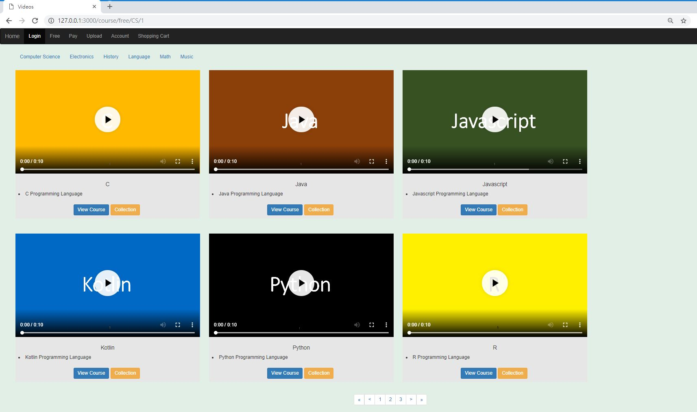
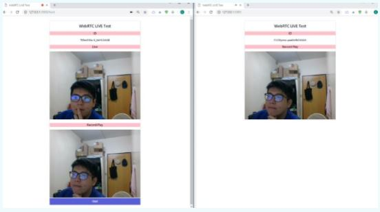
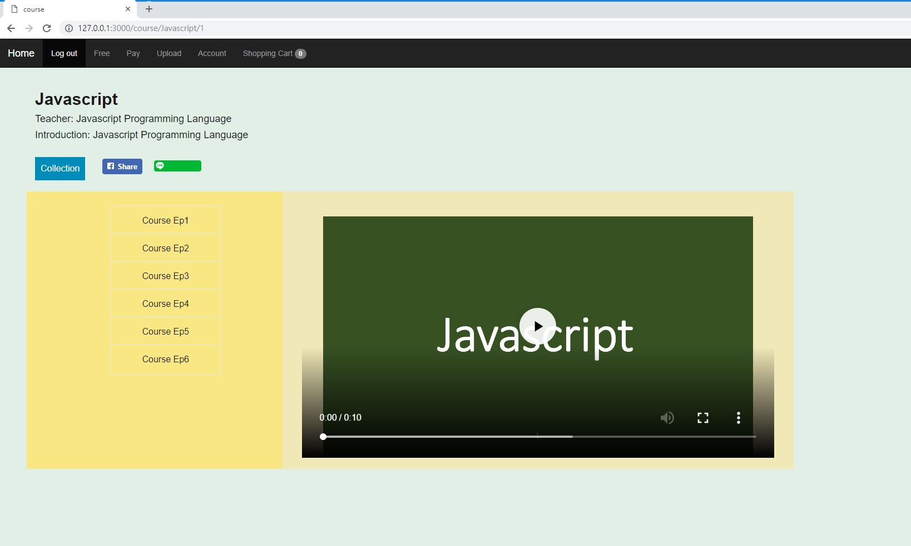
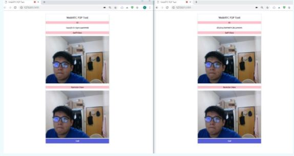
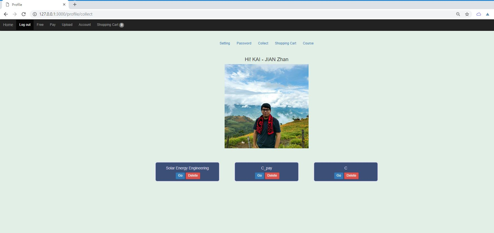
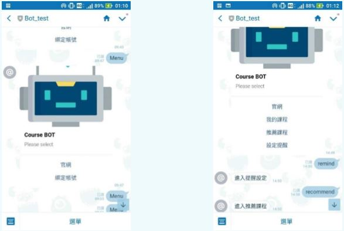
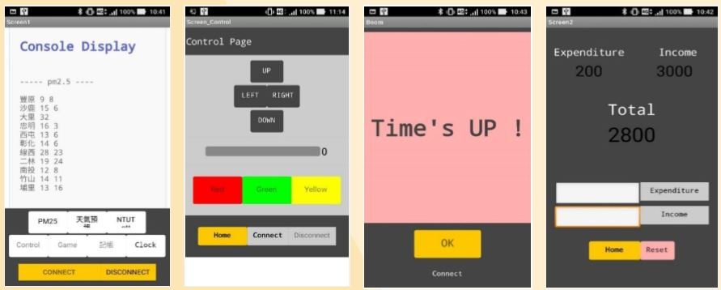
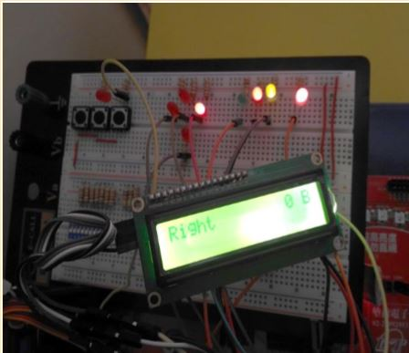

HI!
I'M Kai
 LOVE | PEACE | MUSIC
LOVE | PEACE | MUSIC
LOVE | PEACE | MUSIC
Do what you love and get better at it !
#Paoject 01
碩士班 論文(製作中)
> 以微服務架構實作教育平台
後端使用 NodeJS 搭配 nest.js 框架來開發，微服務採用 Event sourcing + CQRS 架構，使用 Redis 作為各 Micro Service 之間的溝通橋梁， 前端採用 SPA 架構，使用 React 搭配 Redux 與 Redux-Obserable 來實現。
#Paoject 02
碩士班 計畫參與
> 教育部教育基金會資訊網 網站建置
#Paoject 03
大學專題
> Design and implementation of Real-Time Education Video Platform
An education video platform with Member system, Shopping-cart system, LineBot and WebRTC streaming create by Node JS server (Express + EJS + Bootstrap + Mlab)






#Paoject 04
大學課堂作業
> Arduino Assistant Robot
An Assistant Robot implementation by Ardino which can crawling the latest data(pm2.5, weather and ptt), setting clock, accounting and moving control by mobile app.

